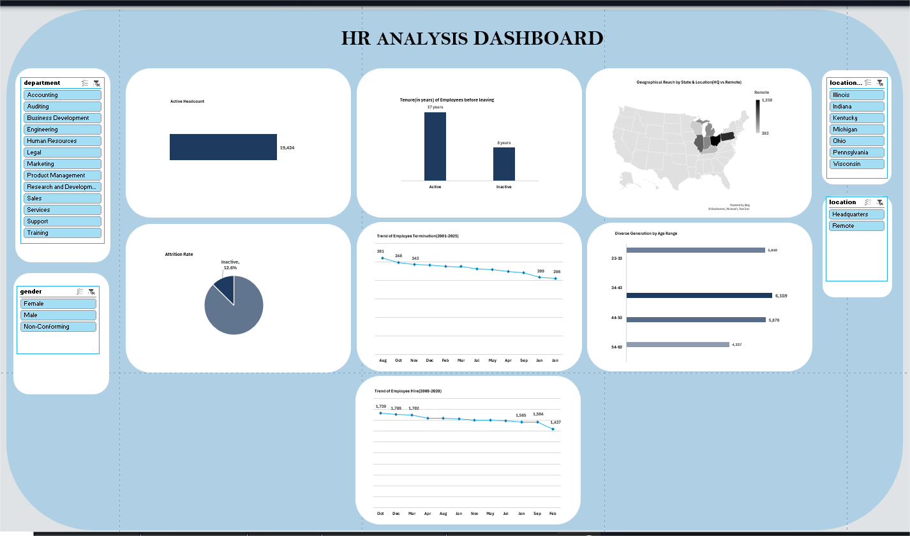

Atlas Tech Solutions is an IT focused company, providing different digital services to its customers. They lack a centralized data visualization tool to track employee lifecycle metrics. This has led to the company facing tons of uncertainties in terms of decision making backed by data.
I led a team of six data analysts to analize a primary dataset of Atlas Tech Solutions using Excel and also create a user-friendly dashboard. You can find a 5-minute read on how this project was done and a detailed report of insights.


In this next Excel project, a raw dataset on BIKES SALES, is extracted and the raw, uncleaned dataset was cleaned up in preparation for further use. The "Remove Duplicates" "Find & Replace", as well as the "Conditional IF Statements" were all employed.
The PivotTables was then used to summarize the data after cleaning. The Recommended Chart feature was then used to create visuals representing summarized data and finally, a responsive dashboard was created.

In this first Power BI Project the raw and uncleaned dataset from a Professional Survey was transformed into the PowerQuery Editor. Here, columns that weren't needed were deleted. The other columns which was used were cleaned up to a useable form. The "Find & Replace" was also used. The split column was one of the most used feature which was used to simplify certain column data and create new columns. Some data types had to be changed for a better visualization. A dashboard was then created using the several charts.

This first SQL Project is basically an introduction project to my use of SQL. A dataset for student grades is used and different queries are created in the MySQL Workbench from which results are extracted using specific statements like: SELECT, FROM, WHERE, GROUP BY, HAVING, and ORDER BY. This project also uses multitable analysis like: LEFT JOIN, LIMIT, COUNT, and DISTINCT functions. You can find a 4-minute read on how this project was carried out.

Here, this project focused on a Restaurant Order Anlysis where two separte tables which were later merged using the LEFT JOIN, were explored.
{kind=link}